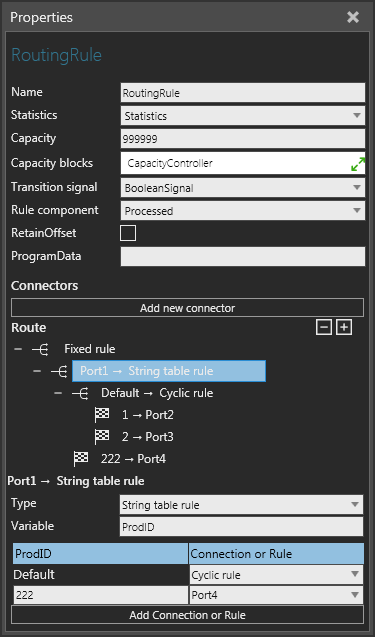
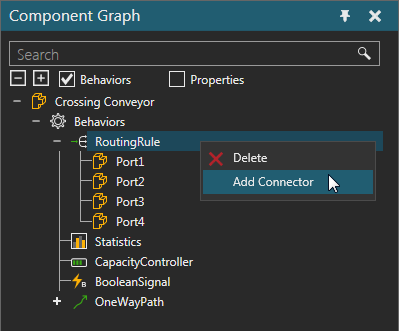
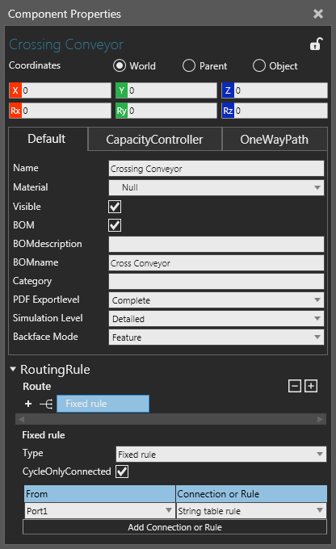

A Routing Rule allows you to route components to and from different containers based on one or more levels of conditional statements.

The ports of a Routing Rule are listed with the behavior in the Component Graph panel.

| Name | Description |
| Name | Defines the name of the router. |
| Statistics | Defines the Statistics behavior that collects statistics generated by the router. |
| Capacity | Defines the amount of components the router can manage at any given time. |
| Capacity blocks | Defines a list of Capacity Controller behaviors for globally defining the router's capacity. Generally, a Capacity Controller is used as a variable for controlling the capacity of one or more containers in order to avoid deadlock situations. |
| Transition signal | Defines a Boolean Signal to signal the arrival and departure of a component in the router. A True value signals the arrival of a component. A False value signals the departure of a component. |
| Rule component | Defines if rule processing is done for the router's component or a component contained by the router. |
| RetainOffset | Turns on/off the ability to retain position of component as it passes through route. |
A Routing Rule uses ports/connectors to connect to other behaviors and transfer in and out components.
| Name | Description |
| Add new connector | Adds a new port to router.
Shortcut: In the Component Graph panel, right-click a Routing Rule behavior, and then click Add Connector. |
A route is defined using one or more rules that form a nested structure. In some cases, rules can directly route to a connection/port. In other cases, a rule can use another rule to determine the route of a component. In all cases, changing a rule will undo all of its child rules. As a last resort, some rules allow you to define a default connection or rule.
Tip: You can edit the route of a Routing Rule in the Component Properties panel.

| Name | Description |
| Boolean Table | Routes components to a selected port based on a True or False
value.
Variable Default |
| Capacity | Routes components to the first selected port that passes a capacity test. |
| Cyclic | Routes components to selected ports in sequence before repeating
the same cycle.
CycleOnlyConnected |
| Fixed | Routes components from a selected port to another selected
port.
CycleOnlyConnected |
| Integer Table | Routes components to a selected port based on an integer value.
Variable Default |
| Percentage | Routes components to selected ports based on a percentage distribution.
RandomStream In all cases, the total percentage for all selected ports should add up to 100. |
| <Port> | Routes components to a selected port.
For example, all incoming components of router would exit the selected port. Generally, only available as a level 1 rule. |
| Product Type Rule | Routes components to a selected port based on a selected Product
Type or Flow Group.
Default |
| Real Table | Routes components to a selected port based on a real number
value.
Variable Default |
| String Table | Routes components to a selected port based on a string value.
Variable Default |
| Transport solution rule | Routes products to a selected port based on the transport solution.
RuleVariable Defines which transportation node of processed product is evaluated by the rule. Note: Rule processing is done only for products contained by the router. |
| Product Type rule | Routes products to a selected port based on the Product Type.
RuleVariable Products can be routed based on Product Types or Flow Groups. |